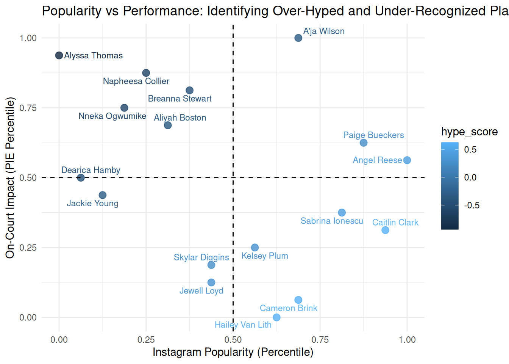

Appendix D — Karyna S.
Code
wnba_pbp <- wehoop::load_wnba_pbp()
wnba_team_box <- wehoop::load_wnba_team_box()
wnba_player_box <- wehoop::load_wnba_player_box()
top_players <- wnba_player_box %>%
filter(game_id != 401781604) %>%
group_by(athlete_display_name, team_name) %>%
summarize(
avg_ppg = mean(points, na.rm = TRUE),
avg_blocks = mean(blocks, na.rm = TRUE),
avg_rebounds = mean((offensive_rebounds + defensive_rebounds), na.rm = TRUE),
avg_assists = mean(assists, na.rm = TRUE),
avg_steals = mean(steals, na.rm = TRUE),
)
game_totals <- wnba_team_box %>%
filter(game_id != 401781604)%>%
group_by(game_id) %>%
summarize(
total_points = sum(team_score),
total_field_goals_made = sum(field_goals_made),
total_free_throws_made = sum(free_throws_made),
total_field_goals_attempted = sum(field_goals_attempted),
total_free_throws_attempted = sum(free_throws_attempted),
total_defensive_rebounds = sum(defensive_rebounds),
total_offensive_rebounds = sum(offensive_rebounds),
total_assists = sum(assists),
total_steals = sum(steals),
total_blocks = sum(blocks),
total_fouls = sum(fouls),
total_turnovers = sum(turnovers)
) %>%
ungroup()
player_game_totals <- wnba_player_box %>%
full_join(game_totals, by = "game_id") %>%
select("game_id", "game_date", "athlete_display_name", "team_id",
"team_name", "points", "field_goals_made", "free_throws_made", "field_goals_attempted",
"free_throws_attempted", "defensive_rebounds", "offensive_rebounds", "assists",
"steals", "blocks", "fouls", "turnovers", "total_points", "total_field_goals_made",
"total_free_throws_made", "total_field_goals_attempted", "total_free_throws_attempted",
"total_defensive_rebounds", "total_offensive_rebounds", "total_assists",
"total_steals", "total_blocks", "total_fouls", "total_turnovers") %>%
group_by(game_id, game_date, athlete_display_name, team_id, team_name) %>%
summarize(player_PIE = ((points + field_goals_made + free_throws_made - field_goals_attempted -
free_throws_attempted + defensive_rebounds + (offensive_rebounds/2) +
assists + steals + (blocks/2) - fouls - turnovers) / (total_points + total_field_goals_made +
total_free_throws_made -
total_field_goals_attempted -
total_free_throws_attempted +
total_defensive_rebounds +
(total_offensive_rebounds/2) + total_assists +
total_steals + (total_blocks/2) - total_fouls -
total_turnovers)) * 100)
player_game_totals <- player_game_totals %>%
group_by(athlete_display_name, team_name) %>%
summarize(avg_PIE = mean(player_PIE, na.rm = TRUE)) %>%
na.omit()
player_game_totals2 <- player_game_totals %>%
ungroup() %>%
arrange(desc(avg_PIE)) %>%
slice(1:10)Code
library(rvest)
library(knitr)
library(kableExtra)
url <- "https://www.revolt.tv/article/wnba-players-with-the-most-instagram-followers"
page <- read_html(url)
headers <- page %>%
html_elements("h2 strong") %>%
html_text2
most_followers <- headers %>%
str_remove("^\\d+\\.\\s*") %>%
str_match("^(.*?)\\s*\\((.*)\\)$") %>%
as_tibble() %>%
select(V2, V3) %>%
mutate(V3 = V3 %>%
str_remove("over\\s*") %>%
str_replace(" million", "e6") %>%
as.numeric()) %>%
filter(V2 != "Candace Parker") %>%
arrange(desc(V3)) %>%
slice(1:10)
colnames(most_followers) <- c("athlete_display_name", "follower_count")
most_followers %>%
kable(col.names = c("Player", "Number of Followers"),
align = "ll") %>%
kable_styling()| Player | Number of Followers |
|---|---|
| Angel Reese | 5000000 |
| Caitlin Clark | 3500000 |
| Paige Bueckers | 2500000 |
| Sabrina Ionescu | 1500000 |
| Cameron Brink | 1400000 |
| A'ja Wilson | 1400000 |
| Hailey Van Lith | 1300000 |
| Kelsey Plum | 1200000 |
| Jewell Loyd | 1000000 |
| Skylar Diggins | 1000000 |
Code
top_followers_stats <- most_followers %>%
left_join(player_game_totals, by = "athlete_display_name") %>%
select(athlete_display_name, team_name, avg_PIE, follower_count)
missing_PIE <- player_game_totals2 %>%
filter(!athlete_display_name %in% top_followers_stats$athlete_display_name)
manual_followers <- tibble(
athlete_display_name = missing_PIE$athlete_display_name,
follower_count = c(91600, 340000, 494000, 212000, 383000, 183000, 196000)
)
missing_PIE <- missing_PIE %>%
left_join(manual_followers, by = "athlete_display_name")
final_dataset <- bind_rows(top_followers_stats, missing_PIE) %>%
distinct(athlete_display_name, .keep_all = TRUE) %>%
arrange(desc(avg_PIE))
print(final_dataset)# A tibble: 17 × 4
athlete_display_name team_name avg_PIE follower_count
<chr> <chr> <dbl> <dbl>
1 A'ja Wilson Aces 17.7 1400000
2 Alyssa Thomas Mercury 15.6 91600
3 Napheesa Collier Lynx 15.0 340000
4 Breanna Stewart Liberty 12.7 494000
5 Nneka Ogwumike Storm 12.2 212000
6 Aliyah Boston Fever 12.1 383000
7 Paige Bueckers Wings 11.9 2500000
8 Angel Reese Sky 11.6 5000000
9 Dearica Hamby Sparks 11.4 183000
10 Jackie Young Aces 11.3 196000
11 Sabrina Ionescu Liberty 11.1 1500000
12 Caitlin Clark Fever 10.5 3500000
13 Kelsey Plum Sparks 9.74 1200000
14 Skylar Diggins Storm 8.94 1000000
15 Jewell Loyd Aces 5.34 1000000
16 Cameron Brink Sparks 2.42 1400000
17 Hailey Van Lith Sky 1.43 1300000Code
library(ggrepel)
final_dataset <- final_dataset %>%
mutate(
follower_pct = percent_rank(follower_count)
) %>%
mutate(
PIE_pct = percent_rank(avg_PIE)
) %>%
mutate(
hype_score = follower_pct - PIE_pct
)
ggplot(final_dataset, aes(x = follower_pct, y = PIE_pct, color = hype_score)) +
geom_point(size = 3, alpha = 0.8) +
geom_hline(yintercept = 0.5, linetype = "dashed") +
geom_vline(xintercept = 0.5, linetype = "dashed") +
geom_text_repel(aes(label = athlete_display_name), size = 3) +
labs(
title = "Popularity vs Performance: Identifying Over-Hyped and Under-Recognized Players",
x = "Instagram Popularity (Percentile)",
y = "On-Court Impact (PIE Percentile)"
) +
theme_minimal()